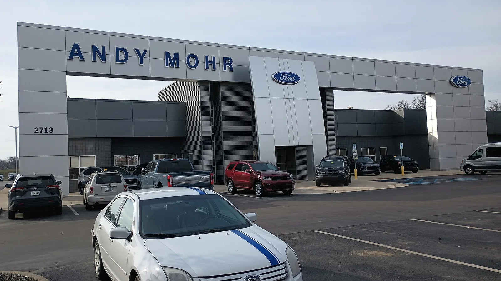
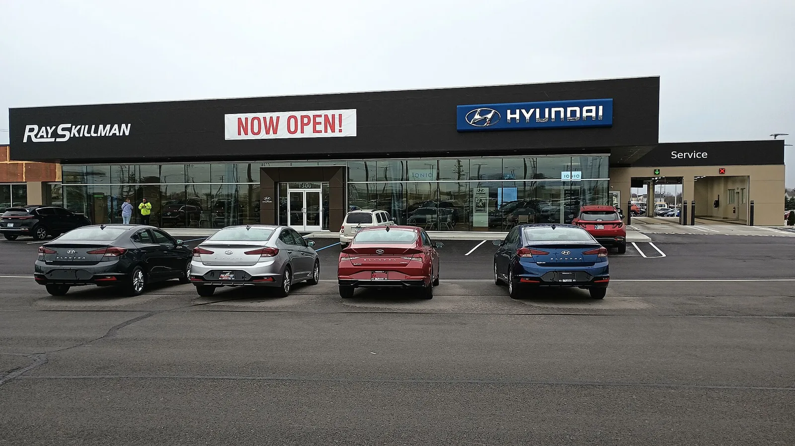
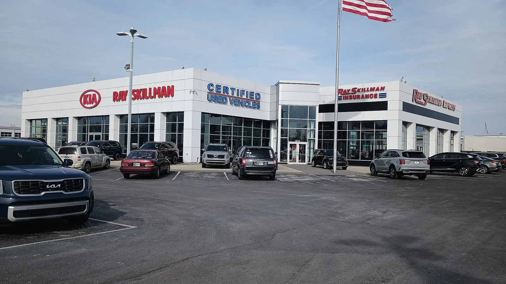
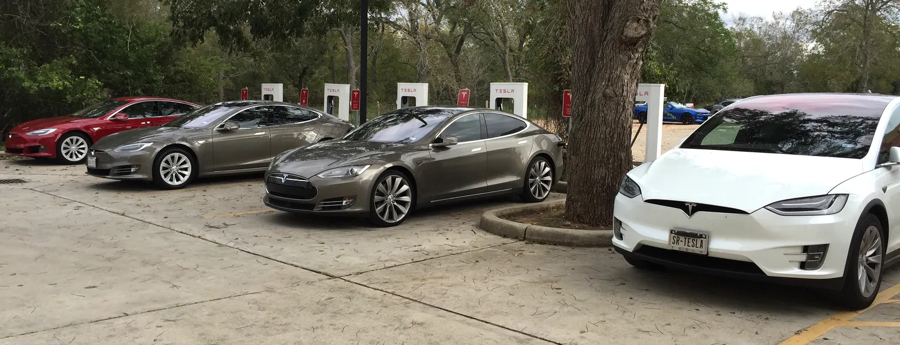

▲ 9월 미국 신차판매는 전년보다 늘었지만, 그 안을 들여다보면 전기차와 하이브리드의 희비가 엇갈린다 ⓒ Wikimedia Commons (Tony Webster, CC BY 2.0)
J.D.파워와 글로벌데이터가 2026년 9월 미국 신차판매(소매+비소매 합산)를 133만100대로 전망했다. 전년 동월 대비 2.6% 늘어난 수치다. 얼핏 보면 시장이 살아나는 듯하지만, 계절조정연환산 판매율(SAAR)과 소매 판매만 따로 떼어보면 이야기가 달라진다. 전기차 연방 세액공제가 2025년 9월 30일로 끝난 지 꼭 1년, 그 여파가 판매 구성을 완전히 바꿔놓고 있다.
1. 133만 대, 그런데 SAAR는 왜 엇갈리나
이번 전망에서 가장 눈에 띄는 대목은 '총판매'와 '소매판매'의 방향이 다르다는 점이다. 총 신차판매(렌터카·법인차 등 비소매 물량 포함)는 133만100대로 늘었지만, 이는 지난해보다 판매일수가 하루 더 많았던 영향이 크다. 정작 개인·소매 판매만 보면 111만7200대로 전년보다 0.2% 줄었다.
| 지표 | 2026년 9월 전망 | 전년 동월 대비 |
|---|---|---|
| 총 신차판매 | 133만100대 | +2.6% |
| 총판매 SAAR | 1,610만 대 | -20만 대 |
| 소매 신차판매 | 111만7,200대 | -0.2%(판매일수 조정 전 +4.0%) |
| 소매 SAAR | 1,390만 대 | -50만 대 |
| 3분기 소매판매 | 346만9,200대 | -1.8% |
📍 SAAR가 뭐길래
SAAR(Seasonally Adjusted Annualized Rate)는 그달의 판매 흐름이 1년 내내 이어진다고 가정했을 때의 연간 환산 판매량이다. 실제 월별 판매량은 계절적 요인(연말 프로모션, 신차 출시 시기 등)에 따라 들쭉날쭉하기 때문에, 업계는 SAAR로 시장의 '진짜 체력'을 가늠한다. 총판매 SAAR(1610만 대)보다 소매 SAAR(1390만 대)가 더 크게 떨어졌다는 건, 겉으로 보이는 총량보다 개인 소비자 수요가 더 빠르게 식고 있다는 뜻이다.
J.D.파워·글로벌데이터의 원문 보도자료는 아래에서 확인할 수 있다. J.D.파워 9월 전망 보도자료 바로가기

▲ 하이브리드 라인업이 얇은 완성차업체들은 이번 판매 사이클에서 상대적으로 고전하고 있다는 평가가 나온다 ⓒ Wikimedia Commons (deathpallie325, CC BY-SA 4.0)
2. 전기차 7.9%, 하이브리드 17% — 자리바꿈한 파워트레인 지형
이번 전망에서 가장 극적인 숫자는 파워트레인별 점유율이다. 9월 전기차(EV) 판매 비중은 7.9%로, 전년 동월(14.4%)보다 6.5%포인트나 주저앉았다. 반면 하이브리드는 17.0%로 전년보다 3.5%포인트 올라, 공급 부족에도 불구하고 수요가 꾸준히 늘고 있다.
✅ 전기차가 주춤한 이유
· 연방 EV 세액공제 종료 — 2025년 9월 30일부로 최대 7,500달러 세액공제가 폐지되면서 구매 유인이 크게 줄어듦
· EV 인센티브 축소 — 평균 EV 인센티브가 전년比 21.7% 줄어든 8,829달러로, 제조사가 세액공제 공백을 다 메워주지 못하는 상황
· 대표 모델 판매 둔화 — 현대 아이오닉5·아이오닉6 등 인기 EV도 세액공제 종료 직후인 8월부터 판매가 눈에 띄게 꺾임
· 반면 내연기관·하이브리드 인센티브는 31.6% 증가해, 완성차업체들이 비(非)EV 판매를 오히려 더 적극적으로 밀어주는 모양새
📍 트럼프 CAFE 기준 완화와의 접점
이런 흐름은 트럼프 행정부가 최근 발표한 새 CAFE(기업평균연비) 기준안과도 맞물린다. 완화된 기준은 전기차의 '환산 연비'를 아예 계산에서 제외해, 완성차업체가 규제를 맞추기 위해 억지로 전기차 비중을 끌어올릴 유인을 줄였다. 세액공제 종료로 소비자 수요가 식은 시점에 규제 부담까지 낮아지면서, 완성차업체 입장에서는 하이브리드·내연기관 중심 라인업을 유지할 명분이 한층 강해진 셈이다.
트럼프 행정부의 CAFE 기준 완화 배경은 아래 기사에서 자세히 다뤘다. "전기차 덜 팔아도 된다"… 트럼프, 바이든표 연비규제 뒤집었다 바로가기
3. 현대차, 사상 처음 포드를 넘어선다
이번 판매 사이클에서 가장 눈에 띄는 변화는 현대차의 약진이다. 콕스오토모티브 전망에 따르면 3분기(7~9월) 현대차는 전년比 6.5% 늘어난 51만1,421대를 판매해, 7.1% 줄어든 50만4,172대에 그친 포드를 사상 처음으로 앞지를 전망이다. 기아 역시 같은 기간 하이브리드(HEV) 판매가 늘며 미국 시장에서 기록적인 실적을 냈다.

▲ 현대차는 하이브리드 판매 호조에 힘입어 3분기 사상 처음 포드를 앞지를 전망이다 ⓒ Wikimedia Commons (deathpallie325, CC BY-SA 4.0)
✅ 짧게 보는 배경
· 현대차 브랜드 기준 하이브리드가 8월 판매의 29%까지 차지, 전년比 큰 폭 증가
· 기아는 하이브리드(HEV) 판매가 늘어 시장 점유율 9%까지 확대
· 순수 전기차(아이오닉5·6 등)는 세액공제 종료 이후 판매가 꺾였지만, 하이브리드 전환이 이를 상쇄하는 구조
현대차그룹의 '빅3' 진입 전망과 포드 부진의 자세한 배경(하이브리드 라인업 격차, F-150 판매 부진, 공급망 차질 등)은 아래 기사에서 자세히 다뤘다. 현대차그룹, 포드 제치고 美 '빅3' 사상 첫 진입 전망 바로가기

▲ 기아도 하이브리드 판매 증가에 힘입어 미국 시장 점유율을 끌어올렸다 ⓒ Wikimedia Commons (deathpallie325, CC BY-SA 4.0)
4. 신차 값은 오르고, 인센티브도 늘고 — 소비자에게는 무슨 의미인가
판매 구성만 바뀐 게 아니라, 가격표 자체도 움직이고 있다. 9월 평균 신차 거래가격은 4만5,915달러로 전년보다 0.7% 올랐고, 평균 월 할부금은 821달러로 9월 기준 역대 최고치를 다시 썼다. 동시에 평균 인센티브 지출도 3,574달러로 7.3% 늘었다.
| 항목 | 2026년 9월 | 전년比 |
|---|---|---|
| 평균 거래가격 | $45,915 | +0.7% |
| 평균 월 할부금 | $821 (9월 역대 최고) | +3.2% |
| 평균 인센티브 | $3,574 | +7.3% |
| 평균 대출 금리 | 6.66% | -4bp(2022년 이후 최저) |
📍 가격은 오르는데 할인도 늘어난 이유
얼핏 모순돼 보이지만, 이는 시장이 양극화되고 있다는 신호로 읽힌다. 세액공제가 사라진 EV는 재고를 털기 위해 인센티브를 늘려야 하는 압박을 받는 반면(다만 EV 인센티브 자체는 전년보다 21.7% 줄어 여전히 부족하다는 평가), 하이브리드·인기 내연기관 모델은 수요가 받쳐주면서 가격 방어력이 오히려 강해졌다. 대출 금리가 2022년 이후 최저 수준으로 내려온 점은 소비자의 실제 구매 부담을 다소 덜어주는 요인이다.
5. 4분기 전망 — 연말 프로모션 시즌, 반등할 수 있을까
3분기 소매판매가 전년보다 1.8% 줄어든 상태로 마감될 것으로 전망되면서, 관심은 4분기로 쏠린다. 통상 4분기는 완성차업체들이 연간 판매 목표를 채우기 위해 '연말 할인·프로모션 시즌'에 들어가는 시기다. 인센티브 지출이 이미 늘어나는 추세인 만큼, 4분기에는 하이브리드·내연기관 모델을 중심으로 한 할인 경쟁이 더 뚜렷해질 가능성이 크다.

▲ 세액공제 없이 재고를 소진해야 하는 완성차업체들은 4분기에 EV 대상 추가 할인을 늘릴 가능성이 크다 ⓒ Wikimedia Commons (Ed Uthman, CC BY 2.0)
✅ 4분기 관전 포인트
· EV 재고 소진 압박 — 세액공제 없이 팔아야 하는 EV 재고를 줄이기 위한 추가 할인 가능성
· 하이브리드 공급 확대 여부 — 수요는 있는데 공급이 못 따라가는 하이브리드 생산능력이 4분기에 얼마나 늘어나는지가 관건
· CAFE 기준 완화의 실질 효과 — 완성차업체들이 완화된 규제를 실제 생산·판매 전략에 반영하는 속도
· 금리 추가 하락 여부 — 대출 금리가 더 낮아지면 소매 수요를 자극할 여지가 있음
6. 요약
J.D.파워·글로벌데이터는 2026년 9월 미국 신차판매를 133만100대(전년比 +2.6%)로 전망했다. 다만 총판매 SAAR(1610만 대)보다 소매 SAAR(1390만 대)가 더 크게 후퇴한 데서 보듯, 개인 소비자 수요는 겉으로 보이는 것만큼 강하지 않다.
가장 큰 변화는 파워트레인 지형이다. 연방 EV 세액공제 종료로 전기차 점유율은 7.9%까지 주저앉은 반면, 하이브리드는 17.0%까지 늘었다. 트럼프 행정부의 CAFE 기준 완화까지 맞물리면서, 완성차업체들이 전기차 대신 하이브리드·내연기관에 힘을 싣는 흐름이 한동안 이어질 전망이다.
이 흐름의 최대 수혜자는 현대차·기아다. 하이브리드 판매 호조에 힘입어 현대차는 3분기 사상 처음 포드를 앞지를 것으로 예상되며, 기아도 기록적인 실적을 냈다. 반대로 하이브리드 라인업이 얇은 디트로이트 완성차업체들은 이번 수요 이동기에 상대적으로 고전하고 있다. 4분기에는 EV 재고 소진 압박과 연말 프로모션 경쟁이 겹치면서, 인센티브 지출이 한층 더 늘어날 가능성이 크다.